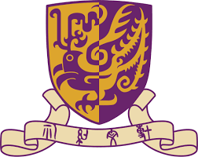

|
About
I am an Assistant Professor in the Department of Computer Science and Engineering (CSE) at Texas A&M University. My research in robotics lies at the intersection of control theory, machine learning, and social science, with broad interests in safe control and verification, behavior planning, and human-robot interaction. Specifically, I develop principled methods to enable safe robot autonomy, supporting effective collaboration among robots and between robots and humans in uncertain, dynamic environments.
Before joining Texas A&M, I earned my Ph.D. in Electrical and Computer Engineering from Carnegie Mellon University in 2025, where I worked closely with Dr. John Dolan. I received my Bachelor’s degree in Electronic and Information Engineering from the Chinese University of Hong Kong, Shenzhen (CUHK-Shenzhen) in 2019.
My research has been recognized by the 2023–2024 Qualcomm Innovation Fellowship and an honorable mention for the 2024 Jane Street Graduate Research Fellowship. I was also named an IEEE/ACM Human-Robot Interaction (HRI) Pioneer (2024) and selected as an MIT EECS Rising Star (2024). In addition, my work has received best paper awards and nominations at leading venues, including AAMAS, AAAI, IFAC CPHS, and workshops at ICRA, IROS, and IJCAI.

|
 |
| 2019 - 2025 | 2015 - 2019 |
News
- Sep 2025Serving as an Associate Editor for ICRA 2026.
- Aug 2025Serving as the Junior Co-chair for the Technical Committee on Multi-Robot Systems.
- Aug 2025Welcome my first PhD student, Joonkyung Kim!
- Aug 2025Started as an Assistant Professor at TAMU CSE. Gig 'Em, Aggies!
- Jul 2025Successfully defended my PhD thesis. Finally, Dr. Lyu!
- May 2025Received the Best Poster Award at the 2025 CPS-IOT Week Ph.D. Forum!
Teaching
- Fall 2025: CSCE 689: Special Topic in Multi-Robot System
Selected Publications
* denotes student mentee co-author
- Yupeng Yang, Yiwei Lyu, Yanze Zhang, Ian Gao, Wenhao Luo, "Integrating Online Learning and Connectivity Maintenance for Communication-Aware Multi-Robot Coordination." International Conference on Intelligent Robots and Systems (IROS), 2024 [ PDF ]
- Yanze Zhang, Yiwei Lyu, Sude E. Demir, Xingyu Zhou, Yupeng Yang, Junmin Wang, and Wenhao Luo, "Courteous Driving using CBF-inspired and Ego-perceived Risk Maps." International Conference on Intelligent Transportation Systems, (ITSC), 2024 [ PDF ]
- Yupeng Yang, Yiwei Lyu, Yanze Zhang, Sha Yi, Wenhao Luo, "Decentralized Multi-Robot Line-of-Sight Connectivity Maintenance under Uncertainty." Robotics: Science and Systems, (RSS), 2024 [ PDF ]
- Nate Ludlow*, Yiwei Lyu, John Dolan, "Hierarchical Learned Risk-Aware Planning Framework for Human Driving Modeling." International Conference on Robotics and Automation (ICRA), 2024 [ PDF ]
- Yiwei Lyu, Wenhao Luo, John Dolan, "Risk-based Socially-Compliant Behavior Planning for Autonomous Driving." American Control Conference (ACC), 2024 [ PDF ] (IROS 2024 ERS Workshop Best Paper Award)
- Yiwei Lyu, Wenhao Luo, John Dolan, "Risk-aware Safe Control for Decentralized Multi-agent Systems via Dynamic Responsibility Allocation." International Conference on Intelligent Robots and Systems (IROS), 2023 [ PDF ] (ICRA 2023 TAS Workshop Best Paper Award)
- Shuangge Wang*, Yiwei Lyu, John M. Dolan, "Active Probing and Influencing Human Behaviors Via Autonomous Agents." IEEE International Conference on Robotics and Automation (ICRA), 2023 [ PDF ]
- Soumith Udatha*, Yiwei Lyu, John M. Dolan, "Reinforcement Learning with Probabilistically Safe Control Barrier Functions for Ramp Merging." IEEE International Conference on Robotics and Automation (ICRA), 2023 [ PDF ]
- Yupeng Yang, Yiwei Lyu, Wenhao Luo, "Minimally Constrained Multi-Robot Coordination with Line-of-sight Connectivity Maintenance." IEEE International Conference on Robotics and Automation (ICRA), 2023 [ PDF ]
- Yiwei Lyu, John Dolan, Wenhao Luo, "Decentralized Safe Navigation for Multi-agent Systems via Risk-aware Weighted Buffered Voronoi Cells." The 22nd International Conference on Autonomous Agents and Multiagent Systems (AAMAS), 2023 [ PDF ] (Pragnesh Jay Modi Best Student Paper Award Runner-Up)
- Wenli Xiao*，Yiwei Lyu, John Dolan, "Model-based Dynamic Shielding for Safe and Efficient Multi-agent Reinforcement Learning." The 22nd International Conference on Autonomous Agents and Multiagent Systems (AAMAS), 2023 [ PDF ]
- Yiwei Lyu, John M. Dolan, Wenhao Luo, "CBF-Inspired Weighted Buffered Voronoi Cells for Distributed Multi-Agent Collision Avoidance." American Control Conference (ACC), 2023 [ PDF ]
- Jaskaran Grover, Yiwei Lyu, Wenhao Luo, Changliu Liu, John Dolan, and Katia Sycara, "Pedestrian Dynamics Inference Using Control Barrier Functions and Mixed-Integer Quadratic Programming." The 4th IFAC Workshop on Cyber-Physical Human Systems (IFAC CPHS), 2022 [ PDF ] (Best Student Paper Finalist)
- Yiwei Lyu, Wenhao Luo, and John M. Dolan, "Responsibility-associated Multi-agent Collision Avoidance with Social Preferences." The 25th IEEE International Conference on Intelligent Transportation Systems (ITSC), 2022 [ PDF ]
- Spencer Van Koevering*, Yiwei Lyu, Wenhao Luo, and John M. Dolan, "Provable Probabilistic Safety and Feasibility-Assured Control for Autonomous Vehicles using Exponential Control Barrier Functions." IEEE Intelligent Vehicles Symposium (IV), 2022 [ PDF ] (~10% Oral Presentation)
- Yiwei Lyu, Wenhao Luo, and John M. Dolan, "Adaptive Safe Merging Control for Heterogeneous Autonomous Vehicles Using Parametric Control Barrier Functions." IEEE Intelligent Vehicles Symposium (IV), 2022 [ PDF ]
- Yiwei Lyu, Wenhao Luo, and John M. Dolan, "Probabilistic Safety-Assured Adaptive Merging Control for Autonomous Vehicles." IEEE International Conference on Robotics and Automation (ICRA), 2021 [ PDF ] (IJCAI 2021 AI4AD Workshop Best Paper Runner-Up)
- Yiwei Lyu, Chiyu Dong, and John M. Dolan, "FG-GMM-based Interactive Behavior Estimation for Autonomous Driving Vehicles in Ramp Merging Control." IEEE International Conference on Robotics and Automation (ICRA), 2020 [ PDF ]
- Ziran Zhang, Yiwei Lyu, Fahad Raza, and Huihuan Qian, "Design and Control of A Hybrid Sailboat for Enhanced Tacking Maneuver." 13th World Congress on Intelligent Control and Automation (WCICA), 2018 [ PDF ] (Best Student Paper Finalist)
Selected Honors and Awards
- Best Paper Award, IROS Robot Ethics (ERS) Workshop2024
- EECS Rising Star, MIT2024
- Human-Robot Interaction Pioneer, IEEE/ACM2024
- Qualcomm Innovation Fellowship, Qualcomm2023
- Best Paper Award, ICRA Trustworthy Autonomous Systems (TAS) Workshop2023
- Pragnesh Jay Modi Best Student Paper Award Runner-Up, AAMAS2023
- Best Student Paper Finalist, IFAC CPHS2022
- Best Paper Runner-Up, IJCAI AI for Autonomous Driving (AI4AD) Workshop2021
- Best Student Paper Finalist, WCICA2018